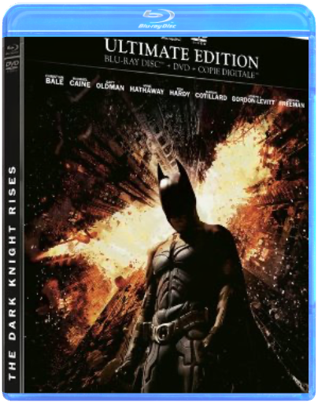

studio ghibli - 1992 - porco rossohayao miyazaki studio ghibli - 1992 - porco rossohayao miyazaki  Blu-ray non zoné compatible avec tous les lecteurs blu-ray  studio ghibli - 2001 - le voyage de chihirohayao miyazaki studio ghibli - 2001 - le voyage de chihirohayao miyazaki Picture label/special package/w/bonus vid.  studio ghibli - 2004 - le château ambulanthayao miyazaki studio ghibli - 2004 - le château ambulanthayao miyazaki The picture in this Blu-ray version is more beautiful than Ghibli DVD movies. Ghibli full COLLECTION Movies directed by Hayao Miyazaki studio ghibli - 2008 - ponyo sur la falaisehayao miyazaki The picture of Blu-ray version is more beautiful than Ghibli DVD movies. 90 years old living in love. Movies directed by Hayao Miyazaki batman - the dark knight riseschristopher nolan Il y a huit ans, Batman a disparu dans la nuit : lui qui était un héros est alors devenu un fugitif. S'accusant de la mort du procureur-adjoint Harvey Dent, le Chevalier Noir a tout sacrifié au nom de ce que le commissaire Gordon et lui-même considéraient être une noble cause. Et leurs actions conjointes se sont avérées efficaces pour un temps puisque la criminalité a été éradiquée à Gotham City grâce à l'arsenal de lois répressif initié par Dent. Mais c'est un chat - aux intentions obscures - aussi rusé que voleur qui va tout bouleverser. À moins que ce ne soit l'arrivée à Gotham de Bane, terroriste masqué, qui compte bien arracher Bruce à l'exil qu'il s'est imposé. Pourtant, même si ce dernier est prêt à endosser de nouveau la cape et le casque du Chevalier Noir, Batman n'est peut-être plus de taille à affronter Bane...  möbiuséric rochant möbiuséric rochant Grégory Lioubov, un officier des services secrets russes, est envoyé à Monaco afin de surveiller les agissements d'un puissant homme d'affaires. Dans le cadre de cette mission, son équipe recrute Alice, une surdouée de la finance. Soupçonnant sa trahison, Grégory va rompre la règle d'or et entrer en contact avec Alice, son agent infiltré. Naît entre eux une passion impossible qui va inexorablement précipiter leur chute.  gremlinssteven spielberg gremlinssteven spielberg Quick Shipping !!! New And Sealed !!! This Disc WILL NOT play on standard US DVD player. A multi-region PAL/NTSC DVD player is request to view it in USA/Canada. Please Review Description.  les aventures de tintin : le secret de la licornesteven spielberg les aventures de tintin : le secret de la licornesteven spielberg Parce qu'il achète la maquette d'un bateau appelé la Licorne, Tintin, un jeune reporter, se retrouve entraîné dans une fantastique aventure à la recherche d'un fabuleux secret. En enquêtant sur une énigme vieille de plusieurs siècles, il contrarie les plans d'Ivan Ivanovitch Sakharine, un homme diabolique convaincu que Tintin a volé un trésor en rapport avec un pirate nommé Rackham le Rouge. Avec l'aide de Milou, son fidèle petit chien blanc, du capitaine Haddock, un vieux loup de mer au mauvais caractère, et de deux policiers maladroits, Dupond et Dupont, Tintin va parcourir la moitié de la planète, et essayer de se montrer plus malin et plus rapide que ses ennemis, tous lancés dans cette course au trésor à la recherche d'une épave engloutie qui semble receler la clé d'une immense fortune... et une redoutable malédiction. De la haute mer aux sables des déserts d'Afrique, Tintin et ses amis vont affronter mille obstacles, risquer leur vie, et prouver que quand on est prêt à prendre tous les risques, rien ne peut vous arrêter... |


 Made with Delicious Library
Made with Delicious LibraryNancy, State zipflap congrotus delicious library Thomas, Julien